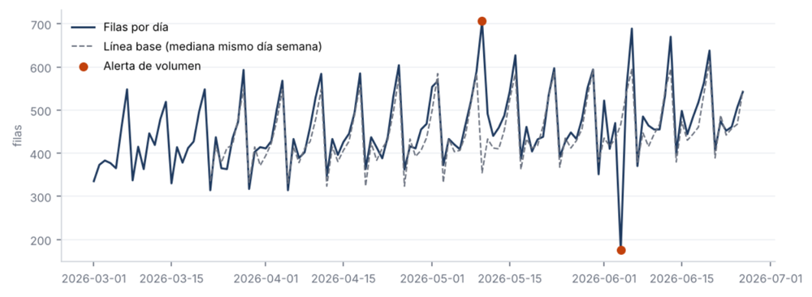

Ingeniería y calidad de datos
Monitor de calidad de datos
Checks automáticos sobre una tabla de pedidos: perfilado con SQL, detección de anomalías con estadística robusta e informe HTML con alertas. Devuelve un código de error si hay alertas graves, para bloquear cargas defectuosas en un pipeline.
- Volumen: z-score robusto (mediana/MAD) contra el mismo día de la semana
- Duplicados, nulos, rangos y frescura de los datos
- Detecta las 6 anomalías inyectadas sin falsos positivos
SQLPythonSQLitepandaspytest